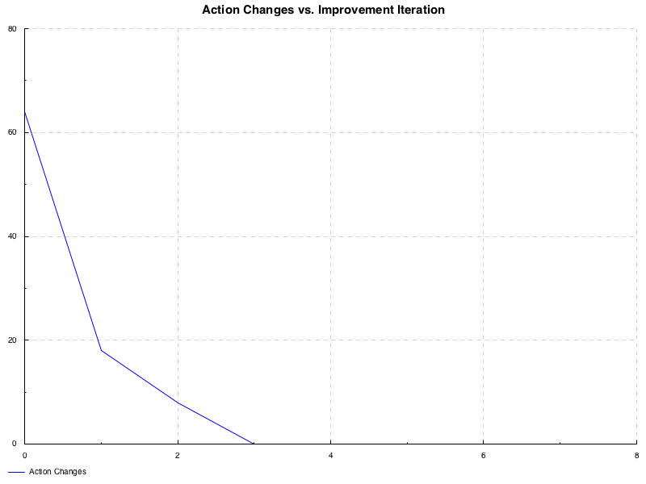
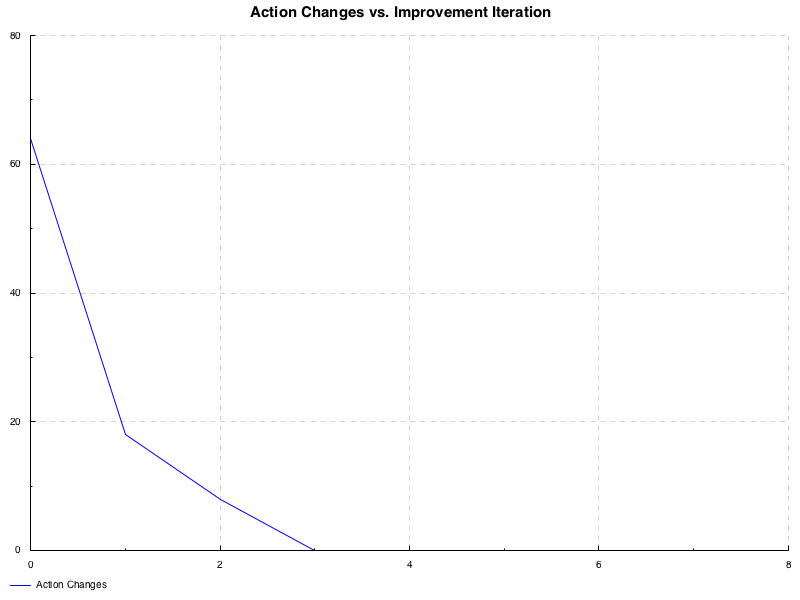
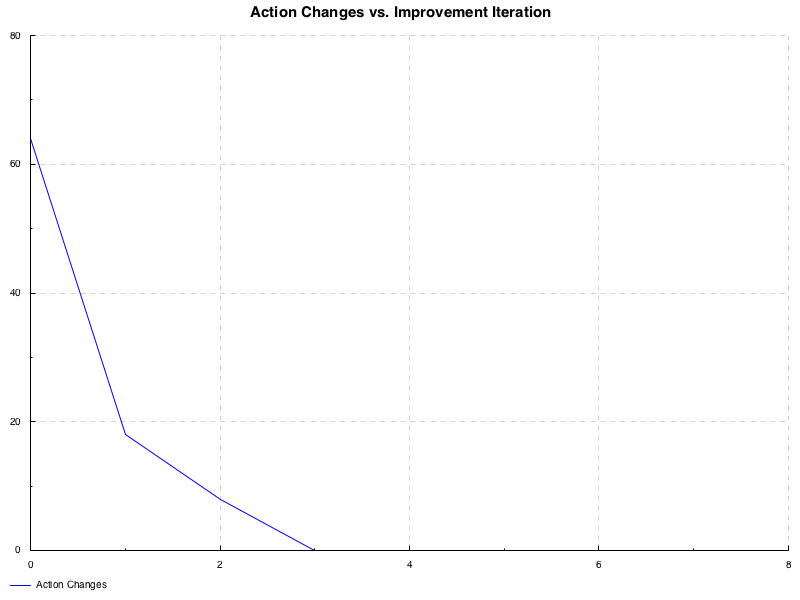

This literate Haskell document provides a solution to ordering optimization for the “toy” case of a single store selling a single item.
Original author: David Banas
Original date: June 14, 2018
Copyright © 2018 Target Corp.; all rights reserved World wide.
{-# OPTIONS_GHC -Wall #-}
{-# OPTIONS_GHC -fno-warn-type-defaults #-}
{-# OPTIONS_GHC -Wno-missing-signatures #-}-- doctest doesn't look at the cabal file, so you need pragmas here
{-# LANGUAGE NoImplicitPrelude #-}
{-# LANGUAGE OverloadedStrings #-}
{-# LANGUAGE DataKinds #-}
{-# LANGUAGE DeriveGeneric #-}
{-# LANGUAGE FlexibleContexts #-}
{-# LANGUAGE RecordWildCards #-}
{-# LANGUAGE ScopedTypeVariables #-}
{-# LANGUAGE TypeOperators #-}
{-# LANGUAGE TypeFamilies #-}
{-# LANGUAGE FlexibleInstances #-}
-- {-# LANGUAGE BangPatterns #-}import qualified Prelude as P
import Prelude (unlines, Show(..), String)
import Protolude hiding (show, for)
-- import GHC.TypeNats
import Options.Generic
import Control.Monad.Writer
import qualified Data.Vector.Sized as VS
import Data.Finite
-- import Data.Finite.Internal
import Data.MemoTrie
import Data.Text (pack)
import Graphics.Rendering.Chart.Easy hiding (Wrapped, Unwrapped, Empty)
import Graphics.Rendering.Chart.Backend.Cairo
import RL.GPI{----------------------------------------------------------------------
Problem specific definitions
----------------------------------------------------------------------}
eps' = 0 -- my choice
disc' = 0.9 -- my choice
demand_mean = 1
demand_var = 1
gShape = demand_mean * demand_mean / demand_var
-- gScale = demand_var / demand_mean
pDemand = gamma' gShape $ finite $ round demand_mean
gLeadTime = 3
gMaxOrder = 5
gMaxOnHand = 10
gReviewPer = 1
gMaxDemand = 6
gProfit = 3
gHoldingCost = 1
gStockOutCost = 1
-- | on-hand : [to-receive(n) | n <- [1 .. gLeadTime]] ++ [epoch]
-- type MyState = VS.Vector (gLeadTime + 2) (Finite (gMaxOrder + 1))
data MyState = MyState
{ onHand :: Int
, onOrder :: [Int]
, epoch :: Int
} deriving (Show, Eq, Generic)
instance HasTrie MyState where
newtype (MyState :->: b) = MyStateTrie { unMyStateTrie :: Reg MyState :->: b }
trie = trieGeneric MyStateTrie
untrie = untrieGeneric unMyStateTrie
enumerate = enumerateGeneric unMyStateTrie
type MyAction = Int
-- | S
allStates :: [MyState]
-- allStates = [ fromMaybe (error "main.allStates: Fatal error occured in list comprehension!")
-- $ VS.fromList ( x
-- : drop n ys ++ take n ys
-- )
allStates =
[ MyState x (drop n ys ++ take n ys) 0
| x <- [0..gMaxOrder]
, n <- [0..(gLeadTime - 1)]
, y <- [0..gMaxOrder]
, let ys = y : (replicate (gLeadTime - 1) 0)
]
-- Just a sized vector alternative to the list above.
-- allStatesV
-- :: VS.Vector ((gMaxOrder + 1) * gLeadTime * (gMaxOrder + 1))
-- (VS.Vector (gLeadTime + 1) Int)
-- allStatesV :: KnownNat n => VS.Vector (n + 1) MyState
-- allStatesV :: KnownNat (n + 1) => VS.Vector (n + 1) MyState
-- allStatesV :: KnownNat n => VS.Vector n MyState
allStatesV :: VS.Vector 108 MyState
allStatesV = fromMaybe (P.error "main.allStatesV: Fatal error converting `allStates`!")
$ VS.fromList allStates
-- | A(s)
actions' :: MyState -> [MyAction]
actions' MyState{..} =
if epoch `mod` gReviewPer /= 0
then [0]
-- else [0..(finite $ fromIntegral gMaxOrder)]
else [0..gMaxOrder]
-- | S'(s, a)
nextStates' :: MyState -> MyAction -> [MyState]
nextStates' MyState{..} toOrder =
[ MyState (onHand + P.head onOrder - sold)
(P.tail onOrder ++ [toOrder])
(epoch + 1)
| sold <- [0..onHand]
]
-- | R(s, a, s')
--
-- Returns a list of pairs, each containing:
-- - a reward value, and
-- - the probability of occurence for that value.
--
-- Note: Previous requirement that reward values be unique eliminated,
-- for coding convenience and runtime performance improvement.
rewards' :: MyState -> MyAction -> MyState -> [(Double, Double)]
rewards' MyState{..} toOrder (MyState onHand' _ _) =
[ ( gProfit * fromIntegral sold
- gHoldingCost * fromIntegral onHand'
- gStockOutCost * fromIntegral missedSales
, pDemand (finite $ fromIntegral demand1) -- / totProb
)
| let demands = if onHand' == P.head onOrder
then [ (x, x)
| x <- [0..gMaxDemand]
]
else [ (onHand + P.head onOrder - onHand', x)
| x <- [0..gMaxDemand]
]
-- totProb = sum $ map (pDemand . finite . fromIntegral) demands
, (demand0, demand1) <- demands
, let totAvailable = onHand + sum onOrder + toOrder
totDemand = demand0 + (gLeadTime + 1) * demand1
-- sold = min onHand demand
sold = min totAvailable totDemand
-- missedSales = max 0 (demand - onHand)
missedSales = max 0 (totDemand - totAvailable)
]
-- onHand' = onHand + head onOrder - sold
-- = onHand + head onOrder - min onHand demand
--
-- demand > onHand:
-- onHand' = head onOrder
-- => Allow demand to sweep entire range.
-- => No probability normalization necessary.
--
-- otherwise:
-- onHand' = onHand + head onOrder - demand
-- demand = onHand + head onOrder - onHand'
-- => Demand is deterministic.
--
-- Note: Although the analysis above shows that no normalization is
-- needed in the first case, it was easier (and more correct)
-- to just normalize always.
-- | Show a function from `MyState` as a table.
--
-- Note: Naively assumes that lead time = review period.
showFofState :: (Show a) => (MyState -> a) -> String
showFofState g = unlines
( "\\begin{array}{" : intersperse '|' (replicate (gMaxOrder + 1) 'c') : "}" :
( ("\\text{On Hand} &" ++ intersperse '&' (replicate (gMaxOrder + 1) ' ') ++ " \\\\") :
["\\hline"] ++
intersperse "\\hline"
( map ((++ " \\\\") . intercalate " & ")
[ (show onHnd :) $ map show
[ g (MyState onHnd (onOrdr : (replicate (gLeadTime - 1) 0)) 0)
| onOrdr <- [0..gMaxOrder]
]
| onHnd' <- [0..gMaxOnHand]
, let onHnd = gMaxOnHand - onHnd'
]
)
++ ["\\hline"]
++ [intercalate " & " $ "\\text{On Order:} " : [show n | n <- [0..gMaxOrder]]]
++ ["\\end{array}"]
)
)
-- | Expected reward for a given state, assuming equiprobable actions.
testRewards :: MyState -> Double
testRewards s =
-- sum [ uncurry (*) r
-- | a <- acts
-- , s' <- nextStates' s a
-- , r <- rewards' s a s'
-- ] / (fromIntegral . length) acts
mean [ (sum . map (uncurry (*))) $ rewards' s a s'
| a <- acts
, s' <- nextStates' s a
]
where acts = actions' s
{----------------------------------------------------------------------
Command line options defintions.
----------------------------------------------------------------------}
data Opts w = Opts
{ nIter :: w ::: Maybe Int <?>
"The number of policy improvement iterations"
, nEval :: w ::: Maybe Int <?>
"The number of policy evaluation iterations per policy improvement iteration"
}
deriving (Generic)
instance ParseRecord (Opts Wrapped)
{----------------------------------------------------------------------
main()
----------------------------------------------------------------------}
main :: IO ()
main = do
-- Process command line options.
o :: Opts Unwrapped <-
unwrapRecord "A toy inventory optimizer."
let nIters = fromMaybe 2 (nIter o)
nEvals = fromMaybe 1 (nEval o)
-- Plot the pdfs.
writeFile "other/inventory.md"
"### Demand Probability Distribution Function\n\n"
toFile def "img/demand.png" $
do layout_title .= "Demand Probability Distribution Function"
setColors $ map opaque [blue, green, red, yellow]
plot ( line "Demand Probability"
[ [ (x, pDemand (finite x))
| x <- [0..20]
]
]
)
appendFile "other/inventory.md" "\n"
-- Calculate and display optimum policy.
appendFile "other/inventory.md" "\n### Policy optimization\n\n"
let (fs, counts) = unzip $ take (nIters + 1)
$ iterate
( optPol
rltDef
{ disc = disc'
, epsilon = eps'
, maxIter = nEvals
, states = allStatesV
, actions = actions'
, nextStates = nextStates'
, rewards = rewards'
}
) (const (0,0), [])
acts = map (\f -> VS.map (fst . f) allStatesV) fs
diffs = map (VS.map (fromIntegral . abs) . uncurry (-))
$ zip acts (P.tail acts)
((_, g'), cnts) = first (fromMaybe (P.error "main: Major failure!")) $
runWriter $ withinOnM eps'
-- ( \ (dv, (_, cnts)) ->
( \ (dv, _) ->
maxAndNonZero dv
) $ zip diffs (P.tail fs)
pol = fst . g'
val = snd . g'
appendFile "other/inventory.md" "\n### Final policy\n\n"
appendFile "other/inventory.md" $ pack $ showFofState pol
appendFile "other/inventory.md" "\n### Final value function\n\n"
appendFile "other/inventory.md" $ pack $ showFofState (Pdouble . val)
-- DEBUGGING
appendFile "other/inventory.md" "\n## debug\n\n"
toFile def "img/valueDiffs.png" $
do layout_title .= "Value Changes vs. Evaluation Iteration"
setColors $ map opaque [blue, green, red, yellow]
forM_ (zip [P.head counts, P.last counts] ["First", "Last"]) $ \ (count, lbl) ->
plot ( line lbl
[ [ (x, y)
| (x, y) <- zip [(0::Int)..] count
]
]
)
appendFile "other/inventory.md" "\n"
toFile def "img/actionDiffs.png" $
do layout_title .= "Action Changes vs. Improvement Iteration"
setColors $ map opaque [blue, green, red, yellow]
plot ( line "Action Changes"
[ [ (x, y)
| (x, y) <- zip [(0::Int)..] cnts
]
]
)
appendFile "other/inventory.md" "\n"
appendFile "other/inventory.md" "\n### E[reward]\n\n"
appendFile "other/inventory.md" $ pack $ showFofState (Pdouble . testRewards) 